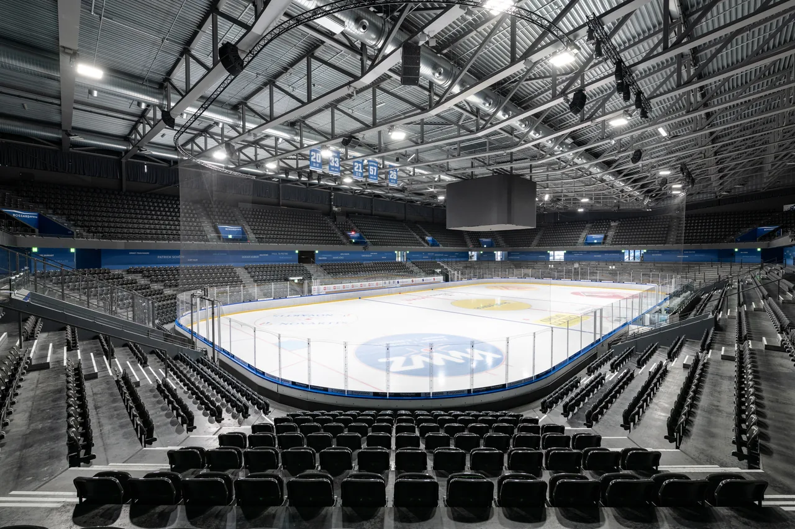
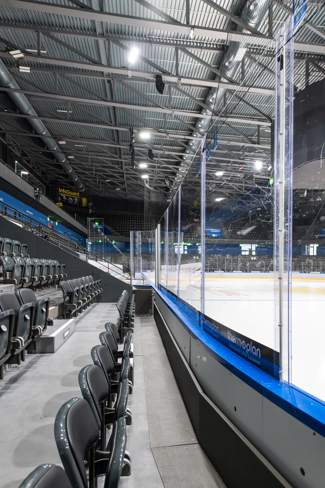
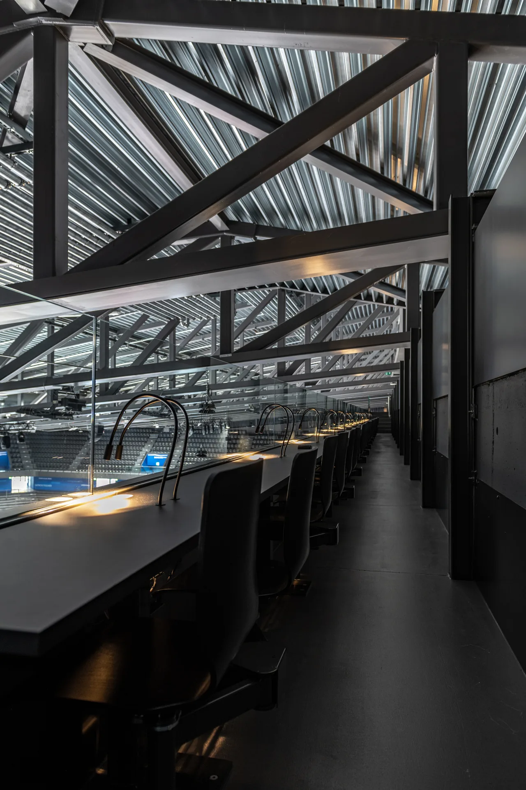
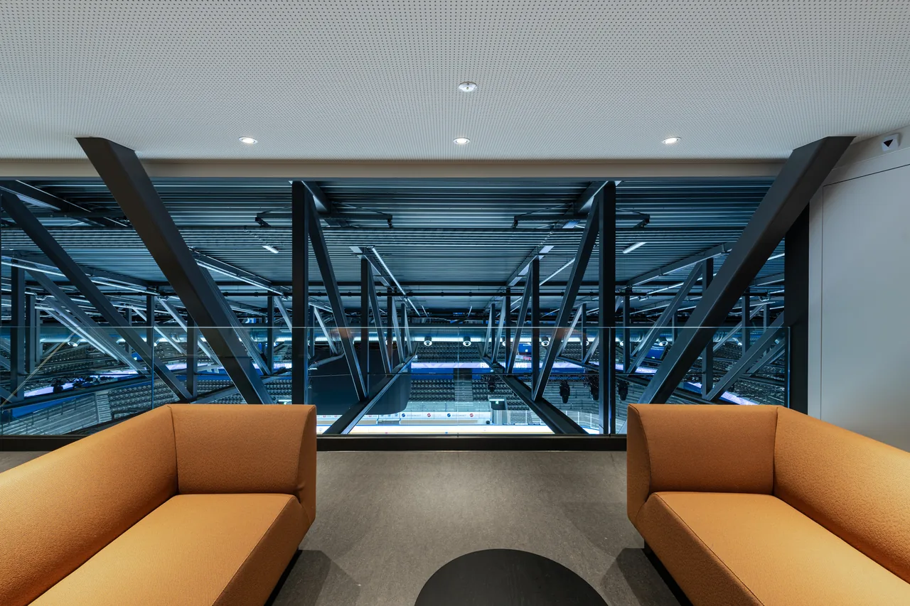
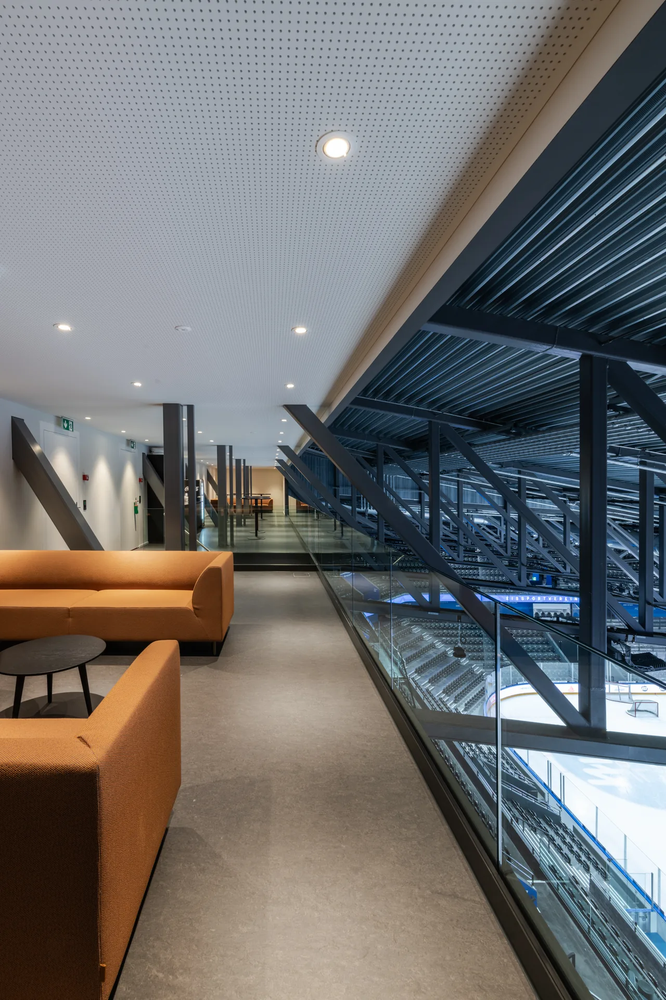

Um der anhaltend hohen Nachfrage nach Sitzplätzen gerecht zu werden und die bevorstehende Erweiterung «keep building» frühzeitig vorzubereiten, wurde bereits im Jahr 2024 ein erstes Teilprojekt realisiert.
Durch zusätzliche Plätze unmittelbar am Eisfeld und durch die Optimierung der bestehenden Sitzreihen konnte die Zuschauerkapazität gezielt erhöht werden. Gleichzeitig wurden mit dieser Massnahme die während der Bauphase von «keep building» wegfallenden Plätze kompensiert – der Spielbetrieb blieb für die Fans auch während des Umbaus gewährleistet.
Parallel wurde ebenfalls die Verlagerung der Medienplätze vorgezogen. Seit der Saison 2025 befinden sich die Arbeitsplätze der Medienschaffenden hoch über dem Spielfeld, im Süden der OYM hall. Ein grosszügiger Aufenthaltsbereich im Dachträger ergänzt die neue Medieninfrastruktur und schafft eine eigenständige und hochwertige Arbeits- und Begegnungszone.



